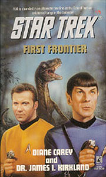

|


Literatura

| ''FIRST
FRONTIER " |  |
|
ISBN: 978-0671520458 |
| Review
por Cláudio Silveira | |
| O
espao, a fronteira final... Aqui vemos um tema recorrente das viagens no tempo para mostrar uma galxia onde a humanidade no existe. E isto se d porque a Terra est dominada pelos dinossauros, que jamais seriam substitudos pela humanidade porque no houve a queda de um fatídico meteoro na regio da Amrica do Norte, formando o Golfo do Mxico e apagando o Sol, o que impossibilitou o desenvolvimento dos dinossauros e permitiu que ns, os primatas, tomssemos conta do planeta. Vale lembrar que este tema j foi especulado num episdio de Voyager chamado "Distant Origin". Ou seja, sem o meteoro, nem eu, nem voc, nem o TB, estaria aqui com nossas insignificantes vidinhas num universo de mais de 100 bilhes de galxias. Kirk e sua turma encontraram Klingons, Vulcanos e Romulanos um pouco diferentes daquilo que conhecem por no terem tido relacionamento algum com a Federao. Eles se sentem, literalmente, como um peixe fora dgua, pois nada daquilo que conhecem existe, nem to significativo nesta linha de tempo. Desse
ponto do livro em diante, vem todo um jogo de negociaes e intrigas para prever
suas intenes pacficas e direcionadas para voltarem ao seu presente. Mas antes
necessrio impedir as razes pelas quais o meteoro foi desviado da rota de coliso
com a Terra. Como a Primeira Diretriz no se aplicaria neste caso, Kirk procura intervir para restabelecer o curso dos acontecimentos de nosso tempo. bom lembrar que, caso a diretriz máxima da Frota exigisse algum tipo de conformismo situao, isso no seria problema para Kirk e sua gente, vide as diversas vezes em que foi "chutado o pau da barraca" para nos proporcionar algum tipo de aventura. No contarei o jeito que nosso herico capito d para vencer as dificuldades, apesar da perna quebrada, do racha no cl dos Ru, e na dupla Klingons que acompanha a misso da Enterprise. Deixo as dvidas e as inquietudes no ar e sugiro ler o livro. Mas, gostaria de dizer que Kirk desafiado e desrespeitado abertamente por um de seus subordinados, sem que isso resulte em sua priso. Retornando
ao seu tempo, o capitão reencontra os Ru, que pensam seriamente em fazer
parte da Federao, e talvez isso seja um dos motivos da intensa hostilidade dos
Gorn, aqueles outros lagartos bpedes,
conforme j vimos no episódio clássico "Arena".
Afinal, trata-se da combinao entre centenas de anos nossa frente com os milhes de anos atrs de ns, que afetam a nossa vidinha ordinria do presente...
|